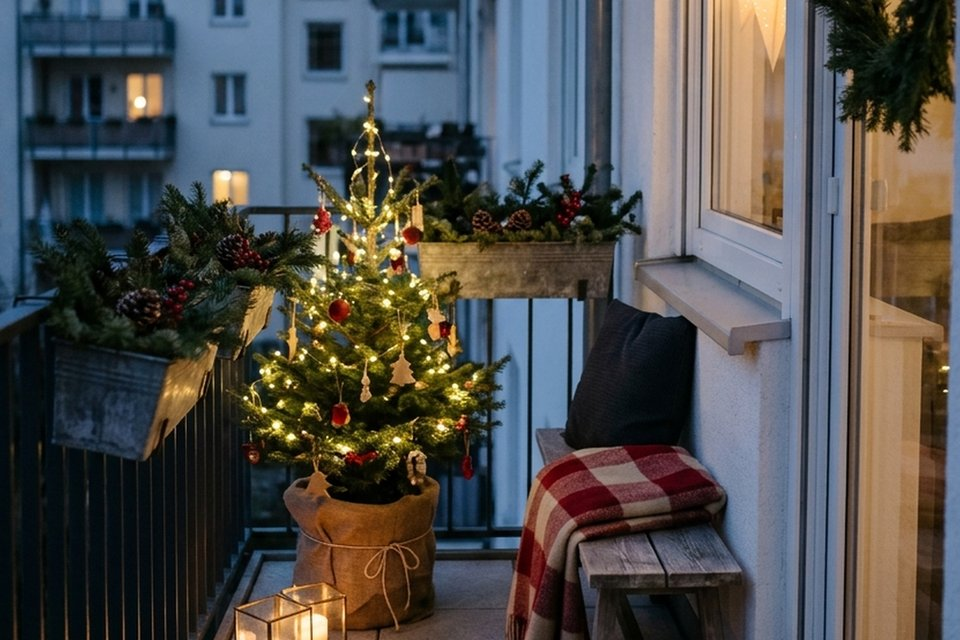

Weihnachtsbalkon ab 50 €: Einkaufsliste & Kosten
Ein kleiner Balkon kann in der Adventszeit der schönste Blick der Wohnung sein – von drinnen und von der Straße. Mit einer kleinen Fichte im Topf, Licht und Tannengrün geht das ab rund 50 €.
So geht's in 6 Schritten
1. Eine kleine Fichte im Topf
Ein lebender Baum (ca. 1 m) im Topf ist das Herzstück. Er bleibt die ganze Zeit draußen – nicht kurz ins warme Zimmer holen, das verträgt er schlecht. Den Topf mit Jute umwickeln, das sieht schön aus und schützt die Wurzeln vor Frost.
2. Warmweiße Lichterkette
Eine Lichterkette für außen mit Timer, locker um den Baum gewickelt. Ohne Außensteckdose: Batterie- oder Solarvariante (siehe Solar, Strom oder Akku?).
3. Tannengrün in die Balkonkästen
Tannenzweige, Zapfen und ein paar Zweige mit roten Beeren in die leeren Balkonkästen stecken. Zweige gibt es oft gratis beim Weihnachtsbaumverkauf. Hält bis Februar.
4. Ein Kranz an der Tür
Ein schlichter Kranz aus frischem Tannengrün an der Balkontür – mit einem Türhaken zum Einhängen, ohne Bohren.
5. Laternen und Stern
Zwei Laternen mit LED-Kerzen auf dem Boden und ein Papierstern im Fenster. LED statt echter Kerzen: sicherer bei Wind und Nachbarn.
6. Decke und Kissen
Eine rot-weiß karierte Wolldecke auf der Bank – für den Glühwein auf dem Balkon.
Einkaufsliste
| Was | Menge | ca. Preis |
|---|---|---|
| Fichte im Topf, ca. 1 m | 1 | 15–30 € |
| Lichterkette außen, warmweiß | 1 | 10–20 € |
| Anhänger aus Holz / rot | 1 Set | 5–10 € |
| Tannenzweige, Zapfen, Beerenzweige | 1 Bund | 0–20 € |
| Türkranz Tanne | 1 | 10–25 € |
| Laternen + LED-Kerzen | 2 | 15–30 € |
| Papierstern mit Beleuchtung | 1 | 10–20 € |
| Wolldecke kariert | 1 | 15–25 € |
Richtwerte für Deutschland, Stand November 2026. Die Preise schwanken je nach Händler und Saison.
Was kostet der Weihnachtsbalkon?
Ab ca. 50 €: Fichte, Lichterkette, Tannengrün und zwei Laternen.
Komplett wie auf dem Bild – ca. 80–180 €: alles aus der Einkaufsliste.
Tipp: Die Fichte nach Weihnachten im Topf draußen lassen und im Frühjahr in den Garten oder einen größeren Kübel setzen – dann steht der Baum fürs nächste Jahr schon bereit.
Häufige Fragen
Überlebt die Fichte auf dem Balkon?
Ja, Fichten sind winterhart. Wichtig: draußen lassen, an frostfreien Tagen gießen und den Topf vor Durchfrieren schützen.
Und nach Weihnachten?
Lichterkette und Laternen bleiben als Winterdeko, nur die roten Anhänger kommen weg. Ideen dafür: Winterbalkon gemütlich machen.